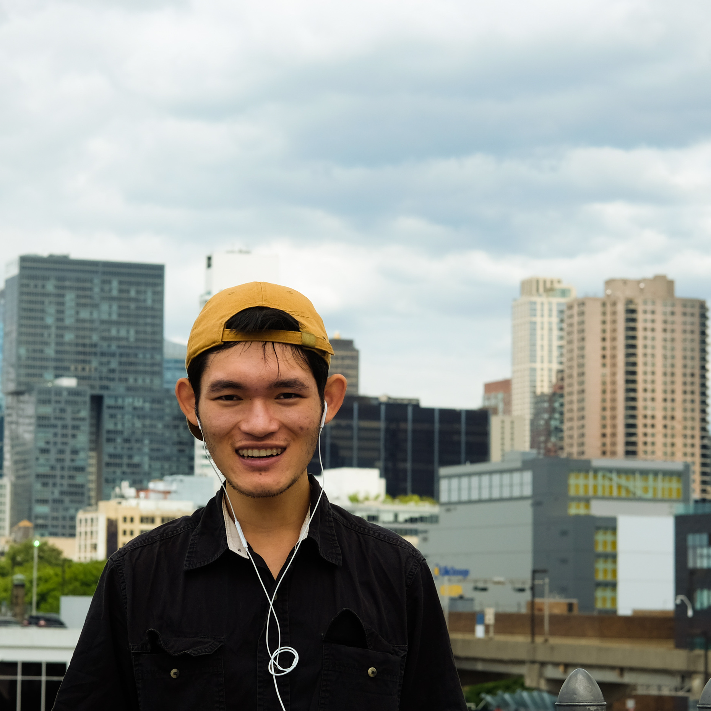

<script src="./assets/js/build-list.js"></script>


<section id="intro">
    <div class="flex-row-between">
        <h1>{{ site.greetings }}</h1>
    </div>
    <div class="bio">
        <p>
            Just a directionless dude in existential crisis with a <u>personal</u> website. Created with ❤️ using Jekyll, hosted with GitHub Pages and Cloudflare, and based on original Gesko template by
                    <a href="https://github.com/DavideBri/Gesko" title="Browse template code" target="_blank" rel="noopener noreferrer">Davide Bri</a>. Best served on desktop.
        </p>
        <br>
        <p> For more trivial, robust nonsense posts, I recently returned to Tumblr and created a <a href="https://minhph.tumblr.com" title="secondary blog" target="_blank" rel="noreferrer noopener">mini-blog</a>.
        The space is reserved for more mundane thoughts, leaving more polished posts to be uploaded on this website.</p>
    </div>
</section>

<section class="info-row">
    <div class="info-column-1">
        
    </div>
    <div class="info-column-2">
        <h2>Minh Phan</h2>
        <div class="social-footer">
            <div class="social-footer-icons">
                <a href="https://github.com/{{ site.author.github }}" title="GitHub" target="_blank" rel="noopener noreferrer"><i 
                    class="fa fa-brands fa-github" aria-hidden="true"></i></a>
                
                <a href="https://www.flickr.com/people/{{ site.author.flickr }}" title="Flickr" target="_blank" rel="noopener noreferrer"><i
                    class="fa fa-brands fa-flickr" aria-hidden="true"></i></a>
                
                <a href="https://www.linkedin.com/in/{{ site.author.linkedin }}" title="LinkedIn" target="_blank" rel="noopener noreferrer"><i
                    class="fa fa-brands fa-linkedin-in" aria-hidden="true"></i></a>

                <a href="https://instagram.com/{{ site.author.instagram }}" title="Instagram" target="_blank" rel="noopener noreferrer"><i
                    class="fa fa-brands fa-instagram" aria-hidden="true"></i></a>

                <a href="https://letterboxd.com/{{ site.author.letterboxd }}" title="Letterboxd" target="_blank" rel="noopener noreferrer"><i
                    class="fa fa-brands fa-square-letterboxd" aria-hidden="true"></i></a>

                <a href="https://goodreads.com/{{ site.author.goodreads }}" title="Goodreads" target="_blank" rel="noopener noreferrer"><i
                    class="fa fa-brands fa-goodreads" aria-hidden="true"></i></a>
            </div>
        </div>
        <div class="taglist"></div>
    </div>
</section>

<section class="mobile">
    <div class="taglist"></div>
</section>

<section>

    <p>
        &copy; www.minhph.com <script>document.write(new Date().getFullYear())</script>. Unauthorized use and/or duplication of this material without express and written permission from this site's 
        author and/or owner is strictly prohibited. 
        Excerpts and links may be used, provided that full and clear credit is given to Minh Phan and this website with appropriate and specific direction to the original content. 
    </p>
</section>

<section>
    <div id="goodreads">
        <h4 style="margin-top: -2.5rem; background-color: var(--menu-bg-color); padding: 0 5px 0 5px; text-align: center;">
            Random Book Quote
        </h3>
        <br/>
        <div s id="gr_quote_body" style="font-family: var(--blog-font); text-align: center; font-style: italic; font-size: 1.3rem; margin: -1rem 0 -1rem 0;">
            &quot;Hỡi ôi! Khi người ta mười bảy tuổi ai cũng mộng, nhưng chẳng một mộng nào thành sự thực bao giờ? Cuộc sống phũ phàng. Đời thì buồn mà kiếp người thì khổ lắm rồi. Sao họ còn muốn gây buồn, gây khổ cho nhau nữa?&quot;&mdash; Nhất Linh
        </div>
        <script src="https://www.goodreads.com/quotes/widget/164880655-minh?v=2" type="text/javascript"></script>
    </div>
</section>


